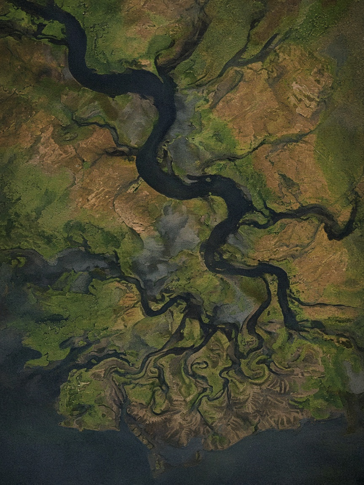

Decorative picture. Not the 6 May 2024 Sentinel-1 scene, and not a measured flood outline.
Enter a desk
Pick who you are. We open that dashboard.
This is demo access. There is no password and we do not hold accounts. Nothing here is a machine-learning score.